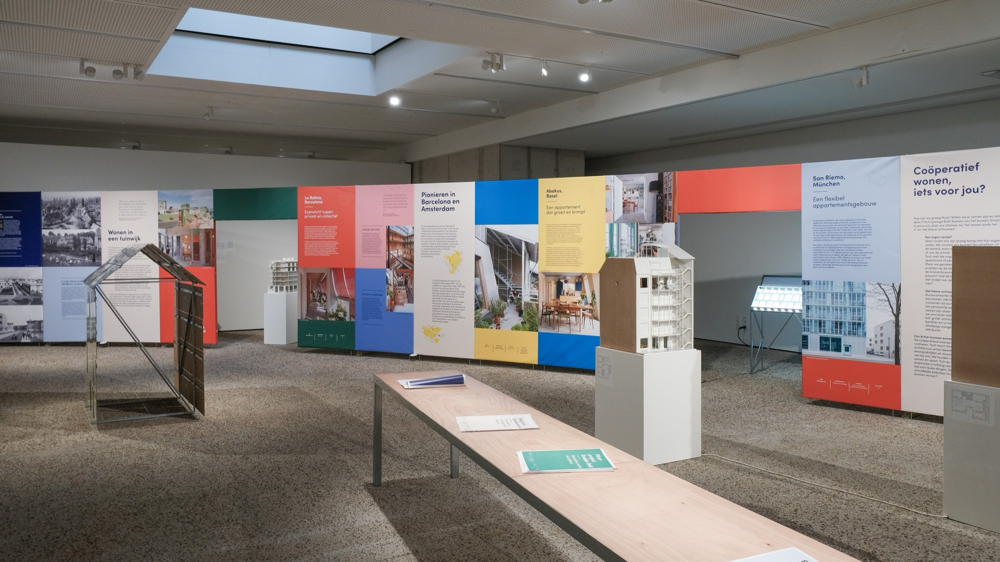
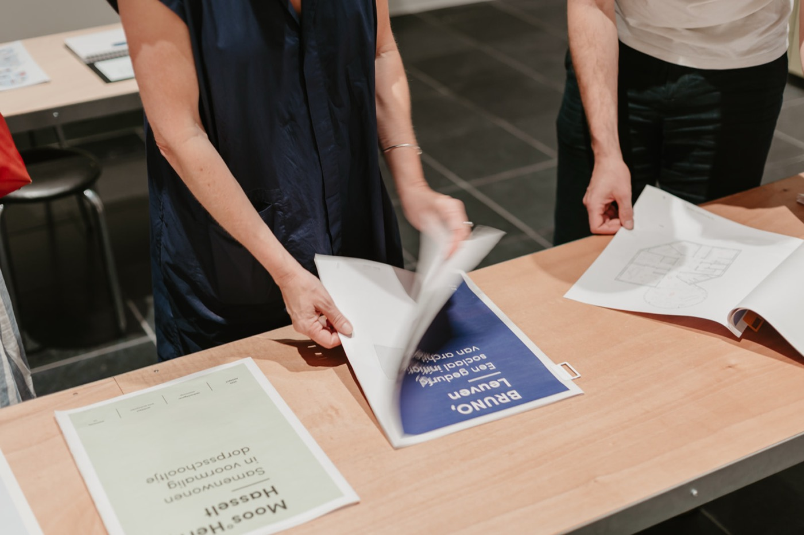

Hier wil ik wonen! Coöperatief woondromen in Vlaanderen
Veel licht, lucht, groen en ruimte zijn woonkwaliteiten die Vlamingen doorgaans associëren met een huis op een eigen kavel. Met de reizende tentoonstelling Hier wil ik wonen! Coöperatief woondromen in Vlaanderen laat de culturele organisatie Architectuurwijzer zien dat ook appartementen deze kwaliteiten kunnen bieden. Aan de hand van inspirerende woonprojecten uit binnen- en buitenland maakt de expo bezoekers vertrouwd met coöperatief wonen, een woonvorm waarbij bewoners geen individuele eigenaar zijn van hun woning, maar aandeelhouder van een coöperatie die het gebouw bezit en beheert.
Voor de tentoonstelling schreef ik in samenwerking met curator Peggy Totté de expoteksten, die bezoekers meenemen langs de geschiedenis, principes en mogelijkheden van coöperatief wonen. Van de eerste coöperaties en de Brusselse tuinwijken uit het interbellum tot hedendaagse woonprojecten in Zürich, München, Barcelona en Amsterdam. De teksten belichten niet alleen de organisatie en financiering van wooncoöperaties, maar vooral ook de architecturale kwaliteiten van hun projecten: slimme woningtypes, flexibele plattegronden, private buitenruimtes en collectieve voorzieningen.
Daarnaast schreef ik twaalf tentoonstellingskrantjes over Vlaamse pioniersprojecten, waaronder Bellefleur in Gent, Moos°Herk in Hasselt, het Honkhuis in Leuven en het Abtshof in Gingelom. Elk krantje brengt de ontstaansgeschiedenis, ambities en architectuur van een woonproject in beeld. Samen met de expoteksten maken ze een complex onderwerp toegankelijk voor een breed publiek en tonen ze hoe coöperatief wonen ook in Vlaanderen nieuwe perspectieven kan openen.
